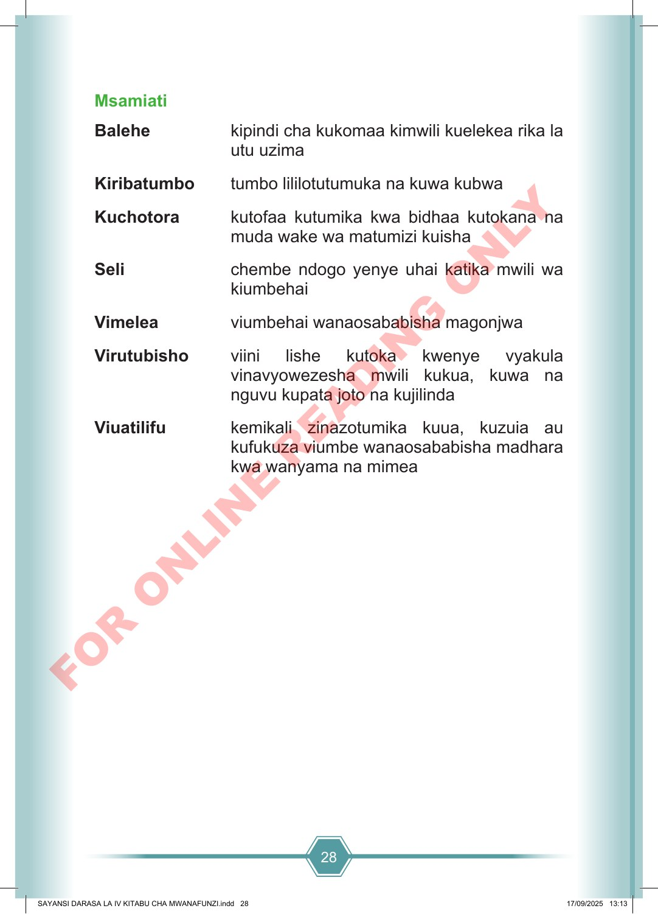

28 Msamiati Balehe kipindi cha kukomaa kimwili kuelekea rika la utu uzima Kiribatumbo tumbo lililotutumuka na kuwa kubwa Kuchotora kutofaa kutumika kwa bidhaa kutokana na muda wake wa matumizi kuisha Seli chembe ndogo yenye uhai katika mwili wa kiumbehai Vimelea viumbehai wanaosababisha magonjwa Virutubisho viini lishe kutoka kwenye vyakula vinavyowezesha mwili kukua, kuwa na nguvu kupata joto na kujilinda Viuatilifu kemikali zinazotumika kuua, kuzuia au kufukuza viumbe wanaosababisha madhara kwa wanyama na mimea SAYANSI DARASA LA IV KITABU CHA MWANAFUNZI.indd 28 SAYANSI DARASA LA IV KITABU CHA MWANAFUNZI.indd 28 17/09/2025 13:13 17/09/2025 13:13 F O R O N L I N E R E A D I N G O N L Y